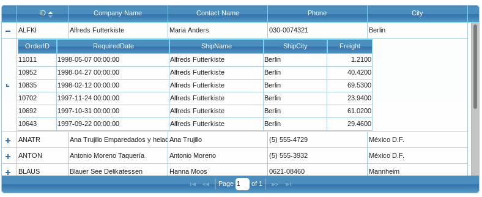
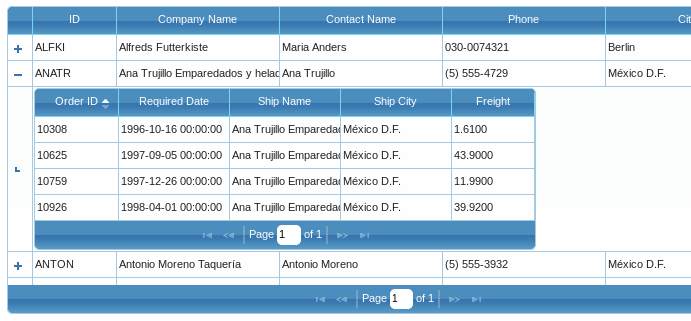

SubGrid¶
There are projects where we need to be able to easily display (or edit) records that are the children of a selected record in the parent grid. We would, of course, want to show only those records that are the children of the selected record in the grid, never the children of all records.
Guriddo jqGrid JS offers two ways of handling child records:
- subGrid
- Grid as a subGrid
subGrid¶
When created this type of subGrid is a simple flat table. The table can not be sorted, paged or re-sized - it just display the information in table format. The data can not be formatted, edited and selected.
subGrids use properties, events and methods of the parent grid - i.e. they should be set as properties in the grid options.
Properties¶
| Property | Type | Description | Default |
|---|---|---|---|
| subGrid | boolean | If set to true this enables using a subGrid. If the subGrid is enabled additional column at left side is added to the basic grid. This column contains a 'plus' icon, which indicate that the user can click on it to expand the row. By default all rows are collapsed. | false |
| subGridOptions | object | A set of options for the subGrid. Below are all the options with their default values { plusicon : classes.icon_plus, minusicon : classes.icon_minus, openicon: "ui-icon-carat-1-sw", expandOnLoad: false, selectOnExpand : false, selectOnCollapse:false, reloadOnExpand : true } plusicon and minusicon defies the icons when the grid is collapsed/expanded. The icons are defined in the styleUI object for the particular CSS - see subGrid property. openicon the icon bellow the minusicon when the subGrid row is expanded - see the same property from subGrid property. expandOnLoad when set to true make it so that all rows will be expanded automatically when a new set of data is loaded. selectOnLoad when set to true the row is selected when a plusicon is clicked with the mouse. selectOnCollapse when set to true the row is selected when a minusicon is clicked with the mouse. reloadOnExpand If set to false the data in the subGrid is loaded only once and all other subsequent clicks just hide or show the data and no more ajax calls are made. |
|
| subGridModel | array | This property, which describes the model of the subGrid, has an effect only if the subGrid property is set to true. It is an array in which we describe the column model for the subGrid data. The syntax is : subGridModel : [ { name: ['name_1', 'name_2', ..., 'name_n'], width: [width_1, width_2, ..., width_n], align: ['left', 'center', ..., 'right'], params: [param_1, ..., param_n], mapping: ['name_1_map', 'name_2_map', ..., 'name_n_map'] } Where name: an array containing the labels of the columns of the subGrid. width: an array containing the width of the columns. This array should have the same length as in name array. align: an array containing the alignment of the columns. The values can be left, center or right. If omited the alignment is left. params: an array in which we can add a name from main grid's colModel to pass as additional parameter to the subGridUrl when click on the plus icon. mapping: the parameter is used only when repeatitems in subGrid is set to false. When defined in this case we use the names from this array to map it to the subGrid names. If not set and repeatitems is false we use the name option. |
|
| subgridtype | mixed | This option allow loading subGrid as a service. If not set, the datatype parameter of the parent grid is used. See the example below | null |
| subGridWidth | integer | Determines the width of the subGrid column if subGrid is enabled. | 20 |
| subGridUrl | mixed | This option has effect only if subGrid option is set to true. This option points to the file from which we get the data for the subGrid. jqGrid adds the id of the row to this url as parameter. If there is a need to pass additional parameters, use the params option in subGridModel. The option can be set as function. The parameter pass to this fumction is the id and the params data as defined in subGridModel. | empty |
| ajaxSubgridOptions | object | This option allow to set global ajax settings for the subGrid when we request data. Note that with this option is possible to overwrite all current ajax setting in the subGrid request including the complete event. | empty object |
| serializeSubGridData | function | If set this event can serialize the data passed to the subGrid ajax request. The function should return the serialized data. This event can be used when a custom data should be passed to the server - e.g - JSON string, XML string and etc. The event actually is used in subGrid ajax data parameter | null |
In order to configure the subGrid it is needed to configure the subGrid item in xmlReader or jsonReader. The default setting for these are:
xmlReader : { ... subgrid: { root: "rows", row: "row", repeatitems: true, cell: "cell" } }
and a jsonReader
jsonReader : { ... subgrid: { root: "rows", repeatitems: true, cell: "cell" } }
The mapping rules are the same as those in the basic grid. For more information refer to Retrieving Data.
In order to use correct subgridtype as service, below is a simple code which shows how this can be achieved:
jQuery("#grid_id").jqGrid({ ... subgridtype: function( prm ) { jQuery.ajax({ url:'url_to_the_service', data:rowidprm, dataType:"json", complete: function(jsondata,stat){ if(stat=="success") { var thegrid = jQuery("#grid_id")[0]; thegrid.subGridJson($.jgrid.parse(jsondata.responseText), prm.id); } } }); },subgrid ... });
Where prm is object that contains the id of the row plus other parameters as required to set subGridModel parameters and subGridJson is a method which is described below.
Note
Note the use of the variable thegrid in the exmple above.
Events¶
The most of the following events use the parameters defined here:
- pID is the unique id of the div element where we can put contents when subgrid is enabled,
- id is the id of the row
- sPostData - the data which is posted when a subgrid request is made
Below is the list of "option" and triggered events. The name of every triggered event begin with jqGrid and is set below the "option" event.
Note
The first parameter of the trigered event is always event. It should be used before any other parameter. By example if the described parameters in options event are a,b,c - i.e event(a,b,c), in triggered event we need to use triggered_event(e, a, b, c)
Note
the triggered event is bind to the grid and is not passed to to any options. See Triggered events
subGridBeforeExpand( pID, id)
jqGridSubGridBeforeExpand(event pID, id)
The event is raised just before expanding the grid. When set, this event should return true or false. If it returns false the subgrid row is not expanded and the subgrid is not opened.
subGridRowExpanded( pID, id)
jqGridSubGridRowExpanded(event pID, id)
This event is raised when the subgrid is enabled and is executed when the user clicks on the plus icon of the grid. Can be used to put custom data in the subgrid omitting the build-in ajax request.
subGridRowColapsed( pID, id)
jqGridSubGridRowExpanded(event pID, id)
This event is raised when the user clicks on the minus icon. The event should return true or false; when the returned value is false the row can not be collapsed.
serializeSubGridData( sPostData )
no triggered event
If set this event can serialize the data passed to the ajax request. The function should return the serialized data. This event can be used when a custom data should be passed to the server - e.g - JSON string, XML string and etc.
isHasSubGrid( row_id )
no triggered event
To the event is passed the row_id parameter. If defined it is executed on every row before the subgrid is build. If the event return false the subgrid for that row is not build-ed. The plus icon disappear.
In the example below if the first symbol of the first column of the grid begin with "1" the subgrid is not build.
jQuery("#grid_id").jqGrid({ url:'example.php', colNames:['Inv No','Date', 'Amount','Tax','Total','Notes'], colModel :[ {name:'invid', index:'invid', width:55}, {name:'invdate', index:'invdate', width:90}, {name:'amount', index:'amount', width:80, align:'right'}, {name:'tax', index:'tax', width:80, align:'right'}, {name:'total', index:'total', width:80, align:'right'}, {name:'note', index:'note', width:150, sortable:false} ], pager: '#pager', rowNum:10, rowList:[10,20,30], subGrid: true, isHasSubGrid : function (rowid) { // if invid begin with 1, do not use subgrid // the first column is a subgrid var cell = $(this).jqGrid('getCell', rowid, 1); if( cell && cell.substring(0,1) === "1") { return false; } return true; } });
Methods¶
The following methods are available for manipulating SubGrid data.
expandSubGridRow( row_id )
Dynamically expand the subgrid row with the id = row_id
parameters
- string row_id the id of the row to be expended
return
jqGrid object
collapseSubGridRow( row_id )
Dynamically collapse the subgrid row with the id = row_id
parameters
- string row_id the id of the row to be collapsed
return
jqGrid object
toggleSubGridRow( row_id )
Dynamically toggle the subgrid row with the id = row_id
parameters
- string row_id - the id of the row
return
jqGrid object
Example¶
This example demonstrates a simple using of Subgrid. After run it look like this:

Please look at the code which is well documented.
<table id="jqGrid"></table> <div id="jqGridPager"></div> <script type="text/javascript"> $(document).ready(function () { $("#jqGrid").jqGrid({ url: 'data.json', mtype: "GET", datatype: "json", colModel: [ { label: 'ID', name: 'CustomerID', key: true, width: 75 }, { label: 'Company Name', name: 'CompanyName', width: 150 }, { label: 'Contact Name', name: 'ContactName', width: 150 }, { label: 'Phone', name: 'Phone', width: 150 }, { label: 'City', name: 'City', width: 150 } ], loadonce: true, width: 780, height: 250, rowNum: 10, sortname: 'CustomerID', jsonReader: { // instruct subgrid to get the data as name:value pair subgrid : { repeatitems: false} }, // set the subGrid property to true to show expand buttons for each row subGrid: true, // set the subgrid type to json subgridtype: 'json', // the url can be a function. In this case we build the urls depending on the id subGridUrl: function( params ) { row return params.id+'.json'; }, // description of the subgrid model subGridModel:[{ name: ["OrderID","RequiredDate","ShipName","ShipCity","Freight"], width: [60,180,150,100,70], align: ["left","left","left","left","right"], params: false }], pager: "#jqGridPager" }); }); </script>
Data returned from server when a plus icon is clicked is
{ "rows":[ {"OrderID":"11011","RequiredDate":"1998-05-07 00:00:00","ShipName":"Alfreds Futterkiste","ShipCity":"Berlin","Freight":"1.2100"}, {"OrderID":"10952","RequiredDate":"1998-04-27 00:00:00","ShipName":"Alfreds Futterkiste","ShipCity":"Berlin","Freight":"40.4200"}, {"OrderID":"10835","RequiredDate":"1998-02-12 00:00:00","ShipName":"Alfreds Futterkiste","ShipCity":"Berlin","Freight":"69.5300"}, {"OrderID":"10702","RequiredDate":"1997-11-24 00:00:00","ShipName":"Alfreds Futterkiste","ShipCity":"Berlin","Freight":"23.9400"}, {"OrderID":"10692","RequiredDate":"1997-10-31 00:00:00","ShipName":"Alfreds Futterkiste","ShipCity":"Berlin","Freight":"61.0200"}, {"OrderID":"10643","RequiredDate":"1997-09-22 00:00:00","ShipName":"Alfreds Futterkiste","ShipCity":"Berlin","Freight":"29.4600"} ] }
Disable Subgrid¶
A subGrid can be enabled (or disabled) dynamically (to respond to changes in the data in the main grid, for example).
To disable subGrid :
jQuery("#grid_id").jqGrid('hideCol', 'subgrid');
To enable subGrid
jQuery("#grid_id").jqGrid('showCol', 'subgrid');
Where
- grid_id is to be replaced by the name of your grid, but
- subgrid is a keyword, not to be replaced
To make this work, subGrid must be initially set to true in the jqGrid properties; only then can we enable and disable it using the code above.
Dev information¶
All the code related to subGrid is in file grid.subgrid.js
When the subGrid is defined (subGrid: true in grid options) on additional column with name 'subgrid' is created and is placed at first place in the colModel. This column is not resizable, not sortable, can not be searched, it is fixed and can be hidden and visible using the appropriate methods and columnChooser.
The subGrid can not be used when the following options are set.
- when a treeGrid is set (treeGrid: true). In this case treeGrid internally disables the subGrid.
- when frozen columns are activated - in this case the frozen column method setFrozenColums does nothing.
When the user click on plus icon we create a new row below. This row has a class ui-subgrid. When the row is expanded a class ui-sg-expanded is added and when is collapsed a class ui-sg-collapsed is added, removing the previous expanded class.
The cell which contain plus/minus icon has a class subgrid-cell and the cell which contain the subgrid data has a class subgrid-data. To the subGrid data cell we add a attribute colspan equal to the number of visible columns.
The row which contain subGrid information has a id = gird id plus "_" plus row id plus "_" plus a word expandedContent. Example. If the grid has a id = jqGrid and the row has id = ALFKI, the the subGrid row id is: jqGrid_ALFKI_expandedContent
subGrid as Grid¶
This is not a ready for you method, but rather a solution using some of the available methods and events. In this alternative to a subGrid, we use the subGrid functions of the main grid to create not a subGrid, but another grid, with all of the power and capacity of the main grid but appearing, as before, under the "parent" record with the same ability to reveal and hide it.

Definition¶
We use two events described in options array: subGridRowExpanded and subGridRowColapsed [note the unconventional spelling].
When these events are defined the population of the data in the subgrid is not executed. This way we can use the subGridUrl to get our custom data and put it into the expanded row. Having this it is easy to construct another grid which will act as subgrid.
<table id="jqGrid"></table> <div id="jqGridPager"></div> <script type="text/javascript"> $(document).ready(function () { $("#jqGrid").jqGrid({ url: 'data.json', mtype: "GET", datatype: "json", colModel: [ { label: 'ID', name: 'CustomerID', key: true, width: 75 }, { label: 'Company Name', name: 'CompanyName', width: 150 }, { label: 'Contact Name', name: 'ContactName', width: 150 }, { label: 'Phone', name: 'Phone', width: 150 }, { label: 'City', name: 'City', width: 150 } ], loadonce : true, width: 780, height: 250, rowNum: 10, // set the subGrid property to true to show expand buttons for each row subGrid: true, // javascript function that will take care of showing the child grid subGridRowExpanded: showChildGrid, subGridOptions : { // expand all rows on load expandOnLoad: true }, pager: "#jqGridPager" }); }); // the event handler on expanding parent row receives two parameters // the ID of the grid tow and the primary key of the row function showChildGrid(parentRowID, parentRowKey) { // create unique table and pager var childGridID = parentRowID + "_table"; var childGridPagerID = parentRowID + "_pager"; // send the parent row primary key to the server so that we know which grid to show var childGridURL = parentRowKey+".json"; // add a table and pager HTML elements to the parent grid row - we will render the child grid here $('#' + parentRowID).append('<table id=' + childGridID + '></table><div id=' + childGridPagerID + '></div>'); $("#" + childGridID).jqGrid({ url: childGridURL, mtype: "GET", datatype: "json", page: 1, colModel: [ { label: 'Order ID', name: 'OrderID', key: true, width: 75 }, { label: 'Required Date', name: 'RequiredDate', width: 100 }, { label: 'Ship Name', name: 'ShipName', width: 100 }, { label: 'Ship City', name: 'ShipCity', width: 100 }, { label: 'Freight', name: 'Freight', width: 75 } ], loadonce: true, width: 500, height: '100%', pager: "#" + childGridPagerID }); } </script>
Note that subGridRowColapsed is not defined. This is true because when the row is collapsed the contents is removed.